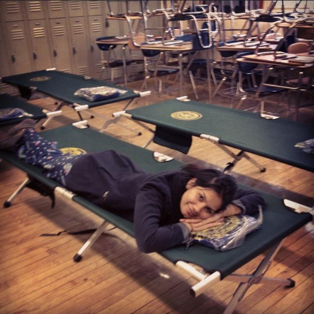

Vincent Laresca -From the Soccer Team to the Big Screen
-by Vanessa Valente
Perhaps you have seen his familiar face on your favorite television show, or maybe even remember him from commercials years ago. But you probably did not know that Vincent Laresca is a proud Bayside High School graduate. Now a permanent denizen of Los Angeles, Laresca was once a local boy, growing up in the 11360. He was gracious enough to reflect on his years here, as well as to offer some advice to future thespians.
Vincent Laresca was born in 1974 into a Panamanian and Italian family. His first and only aspiration was acting. He was fortunate enough to have an opportunity to attend an arts camp, Stage Door Manor, a prestigious institution which spawned famous alums like Natalie Portman. Every summer, from the ages of 10-17, Laresca honed his craft and networked at the prominent camp. It was there that he met his acting coach, who sent him on auditions all over Manhattan. He garnered his first major role in 1991, as a Bayside senior. He played a tough street gang member in Juice. He spent two years at SUNY Purchase; then he spent several years living in Hell's Kitchen. His next stop was Los Angeles. The rest is history.
Since then, he has appeared in countless films and television shows "The Devil's Advocate","The Aviator","Empire,Coach Carter","The Fast and the Furious: Tokyo Drift"and Baz Luhrmann's "William Shakespeare's Romeo + Juliet". In 1997, he had a supporting role in the short-lived Fox ensemble drama 413 Hope St. He has also had major supporting roles on 24, CSI: Miami and Weeds. In 2013 Laresca took on a role as a Mexican federale and the hit-man Jangles in the show Graceland.
Looking back, Laresca remembers some wonderful times at BHS. He was proud to be a member of the soccer team, where he was goalie. He inquired about Mr. Sorenson, who was once his Chorus teacher and positive influence. His messages were all positive- One must have belief in himself, know that tomorrow is always a new day, and pursue acting for the right reasons. If you want to act, do it to complete your life's mission, not get rich quick. Here is a man who certainly seems grounded and appreciative. Bayside High School is proud to call Vincent Laresca one of our own!
In memoriam- Arthur Adair Hartman, American Diplomat
-by Vanessa Valente
Bayside High School's class of 1943 included a man whose influence on America can be described as no less than indelible. Arthur A. Hartman, 89, who served as Jimmy Carter's ambassador to France and Ronald Reagan's ambassador to the Soviet Union, where he represented the United States through a tumultuous period of the Cold War, died on March 16th at a Washington hospital of complications from a fall. In a diplomatic career spanning four decades, he held high-ranking posts under Republican and Democratic presidents and developed a reputation, the New York Times said, as "one of the brainiest and most professional members of the Foreign Service."
Mr. Hartman was born on March 12, 1926 in Flushing, to Joel and May Hartman. In the 1943 Yearbook, Hartman is included as being a part of the Capt. Service Club; Arista; War Council; Nominating Convention Delegate; Yearbook Staff; Honor Guards; Honor Classes; Student Council; G. O. Agent; Baysider Staff. He then served in the United States Army Air Corps from 1944 to 1946. He graduated from Harvard University in 1947 and attended Harvard Law School from 1947 to 1948. Instead of pursuing a degree, he took a job in the Marshall Plan administration in Europe, followed by work in the Foreign Service. During his tenure with the State Department over the years were positions in Paris, Saigon, London and in Brussels as deputy chief of the U.S. Mission to the European Union. In 1974, Hartman was appointed Assistant Secretary of State for European and Canadian Affairs. From 1977 until 1981 he was the Ambassador to France and from 1981 until 1987 Ambassador to the Soviet Union
Hartman was a member of the Council on Foreign Relations, the American Academy of Diplomacy, the French American Foundation and was on the Advisory Council of the Brookings Institution. He was awarded the French Legion d'honneur. In 2004, he was one of the 26 founders of Diplomats and Military Commanders for Change.
Mr. Hartman is survived by his wife Donna, 5 children, 15 grandchildren, and 7 great-grandchildren.
Miriam Riaz

Bayside High School holds abundance of meanings for the countless individuals who have walked through its doors. For some, it is a place to learn and push their own boundaries. For Miriam Riaz, Bayside High School is simply home-one that she left as a student and came back to as an educator. After graduating in 2006, she obtained her B.A. in History at CUNY Queens College and her M.A. in Education at Columbia University.
Speaking from personal experience as a former student of Ms. Riaz, I can attest to the sheer dedication and devotion she has for teaching and for her students.
After already attending a year in Bayside, I can see why alumni would want to relive their high school experience and teach at the very high school that made their career possible. Ms. Riaz agrees with this sentiment, saying "Between the environment, students, and activities, I look forward to waking up every morning and going to school."
Ms. Riaz chose to teach at her alma mater so she could shape and impact her students' lives the same way her former teachers did for her. She says, "It is exciting to now work alongside the same teachers who had once instructed me. It is a bit surreal to stand in their shoes and influence other students in the same way they influenced me." Ms. Riaz has proven her commitment to Bayside High School by surpassing what is expected of her in every way. She co-founded the Alumni Group, Friends of Bayside High School Inc., with her former English teacher Vanessa Valente in an effort to bridge the gap between alumni, community members, and the school. She requested in her interview for former alumni to reintegrate into the community that shaped a fundamental portion of their adolescence by joining this group. All inquiries can be sent to friendsofbhs@baysidehighschool.org.